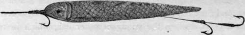

Fly Fishing In The Sea. Part 8
Description
This section is from the book "Sea Fishing", by John Bickerdyke. Also available from Amazon: Sea Fishing.
Fly Fishing In The Sea. Part 8
Both for pollack and coalfish the fly should be cast and drawn through the water, and if the fish run over a pound I should certainly not use more than one fly.
I hope these remarks will not lead anybody to take a rowing boat at Brighton or Hastings and begin casting vaguely about a mile or so off the sea front. Neither should I advise a stroll along the beach at Eastbourne 1 or Cromer, fly rod in hand. No ; to obtain sport with the fly it is necessary to go to places frequented by fly-taking fish, and sport will, of course, depend to a very large extent on the local knowledge available in the person of the fishermen whose interest in the game must be excited by any means the fly fisher thinks best.
I think it was Pliny who said that the mullet was a stupid fish; but things have changed now, and the beautiful mugilidae of the end of this century are as wide awake as the most exacting angler could wish. There is a tradition that these fish rise to the fly, but if I say that there are ' instances on record' (a good and useful old phrase) of grey mullet having been caught by fly fishermen, perhaps I shall have put my case as.
1 But a friend of mine tells me he has more than once had fine sport with large bass off Beachy Head in September. He cast a white fly from a small yacht which was sailed very slowly near the shoals of these fish.
On the unimpeachable authority of a Dublin police magistrate—Mr. Porter—a fly fisher once took a large number of herrings in Dublin Bay. There was a fish hooked at almost every cast, and the fly was a black hackle or black Palmer. A gentleman who writes under the name of ' Stormy Petrel,' on the other hand, caught a very large number of herrings with a fly dressed to represent a red caterpillar, and on another with a green body, these killing better than the ordinary Irish herring flies, which have white wings and silver-tinsel body. This was in Strangford Lough at the end of summer ; the time was evening. Three dozen and nine were brought into the boat, sometimes two at a time ; and more would have been killed had not a pollack risen to one of the flies, bolted for the weeds, after the manner of these fish, and smashed up the tackle.
In the 'Field'of September 23, 1893, Mr. Dombavand wrote that while fishing for cuddies in Loch Inchard, a sea loch in Sutherlandshire, he caught thirty-eight herrings. The loch was at the time full of these fish, and the local fishermen were making immense hauls. A week or two later Mr. J. C. Wilcocks mentioned in the same paper that he had seen shoals of young herrings or whitebait rising at small gnats, just like dace in a millstream. This was in almost, or quite, fresh water, but he had seen them do the same thing at the Kingswear Pontoon, Dartmouth. There was another letter on the same subject from 'J. S.,' who wrote that fly fishing for herrings was a well-known amusement in Shetland, and that he was once with a party of three who had caught over eight hundred herrings in Lerwick Harbour in a little over two hours. The best time for fishing was in June and July, from about 9 to 11 p.m., or from midnight to 3 a.m., the latter hours for choice. The flies were not cast ; there were eight or ten on the line with a small sinker at the end of it, and the line was worked gently up and down. Not only will Scotch and Irish herrings take the fly, but I heard of them acting in a similar way on the East coast, particularly at Filey and Dovercourt.
It will doubtless surprise a good many people to learn that the larger sand-eels take the fly greedily on some parts of our coast. I have never attempted to catch them in this way myself, but Mr. J. W. Blakey, the editor of the 'Angler.' who used to fish a good deal for them on the Northumberland and Durham coasts, has kindly sent me some very interesting information on the subject.
It appears to be delicate and artistic work ; not over-profitable, but a pleasant pastime on a calm summer's day. When the sea is smooth and glassy, the sand-eels come inshore in large shoals. They may be seen swimming about the mouths of harbours and amongst rocks, provided the water is still and clear, and they rather affect a racing current. The larger launce feeds a good deal on the young of other fish, which in turn consume sand-eels on attaining maturity.
The best fly for sand-eels, if it can be strictly called a fly at all, is a piece of dried fish-skin (the grey gurnard yields the best material for the purpose) to which are attached three small hooks. The gurnard should be split down the back, the skin torn off, stretched on a piece of glass and put in the sun to dry. Any particles of flesh which are clinging to the inside of the skin should be scraped away. The result is a piece of kid-like substance, white in the centre, and deepening in colour somewhat at the sides. On some days a strip of white skin kills best, but on others the fish appear to prefer a darker shade, why or wherefore no man knows.
In the illustration is a piece of skin cut to the right shape and size mounted on three hooks—in fact the fly complete ; it will be noticed that two hooks are not attached to the bait proper. For casting this lure there is nothing better than an ordinary single-handed trout rod, a fine dressed tapering line, and a tapered three-yard cast. It is well to be prepared with flies varying from white to grey. Sand-eels are not the only kind of fish which will take these flies, for sea trout, smolts, and billet by no means despise them. On a fine summer's day ten or eleven o'clock is about the hour to start operations. Should there be the least sea on, or the water thickened by river floods or other causes, it is little use fly fishing for sand-eels.
The fly is worked very much like the salmon fly, cast across and rather down stream, allowed to swing round, and then drawn up against the tide in short jerks, but it is important to keep it on the surface of the water. Sooner or later it will attract one of the silvery little creatures to the surface, which will follow the fly a yard or more and then make a dash with open mouth, taking it from behind, when the angler strikes. Should the fish miss the fly, it disappears for a second, but very likely comes up again and seizes it by the head. Owing to these little creatures having most delicate mouths, they have to be played very carefully, and a small meshed landing-net is a decided advantage. One day, Mr. Blakey tells me, he saw a number of sand-eels in pools among the rocks, rushing about, seizing floating particles of food. He tried the gurnard fly without avail, but noticed that now and again the fish would fly at the frayed end of the casting line. This gave him an idea ; he cut off an inch of line, frayed out all the fibres, attached this curious bait to a hook, and with it caught a number of fish. After this experience he tied some small flies in the nature of elongated Palmers, and was so successful with them that he almost discarded the gurnard-skin fly, but later in the season found he had to go back to it.
GURNARD-SKIN FLY FOR sand-eels (FULL SIZE).
The last fish of all—possibly there are more, but I doubt it —are smelts ; and here again I must confess never to have attempted their capture with flies. I need hardly say that any fly used for the purpose should be extremely small. It would be all the more killing if tipped with a fragment of shrimp or lobster and allowed to sink a few inches under the surface. Using a fly rod, I have killed a good many of these fish on an ordinary cast, but in lieu of flies there were two or three small roach hooks, each tipped with a fragment of fish. This tackle requires casting with great care to avoid whipping off the bait.
A last word as to fly fishing for herrings. In the name of Neptune, don't go for them with a huge salmon rod and salmon cast. They are little fish, and should afford very pretty sport indeed with an eleven-foot trout rod and a light trout cast.
Continue to:
Tags
fishing, hooks, bait, fishermen, spanish mackerel, mackerel fishing